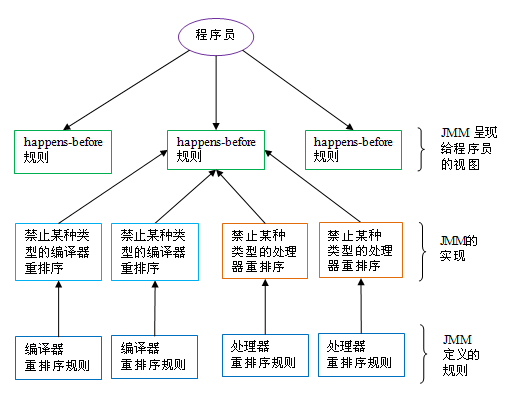

各种概念
从JDK5开始，Java使用新的JSR-133内存模型。
下列概念会在后面出现，再此一并描述。
并发编程模型
并发编程中我们要处理两个关键问题：
- 线程间如何通信。
- 线程间如何同步。
通信：指的是线程之间以何种机制来交换信息。有两种：
-
共享内存：线程之间共享程序的公共状态，线程之间通过读写内存的公共状态来
隐式进行通信。 -
消息传递：线程之间没有公共状态，线程之间必须通过明确的发送消息来
显式进行通信。
同步：指的是用于控制不同线程之间操作发生相对顺序的机制。
在共享内存并发模型里，同步是显式的进行的,程序员必须显示指定某个方法或者某段代码需要在线程间互斥执行。在消息传递并发模型里，由于消息的发送必须在消息的接收之前，所以同步是隐式的。
Java是采用共享内存模型，Java线程之间的通信总是隐式进行的。
Java内存模型（JMM）
Java中，所有静态域、实例域、数组元素存储在堆内存中，堆内存在线程之间共享。
局部变量、方法定义参数、异常处理器参赛不会在线程之间共享，它们不受内存模型影响，不会有内存可见行问题。
Java内存模型(JMM)抽象示意图：

本地内存是JMM的一个抽象概念，并非真实存在，它涵盖了缓存，写缓冲区，寄存器以及其他的硬件和编译器优化。
JMM控制的线程间通信
假设有两个线程：线程A 和 线程B ，它们之间要通信，必须要经历下面2个步骤：
- 线程A把本地内存A中更新过的共享变量刷新到主内存中。
- 线程B到主内存中去读取线程A之前更新过的共享变量。
如图所示：

从整体来看，这两个步骤实质上是线程A在向线程B发布消息，而且这个通信过程必须要经过主内存。
JMM通过控制主内存与每个线程的本地内存之间的交互，来为Java程序员提供内存可见性保证。
重排序
在程序执行时，为了提高性能，编译器和处理器常常会对指令做重排序。重排序分为三种：
- 编译器优化重排序。
- 指令级并行的重排序。
- 内存系统的重排序。
从Java源代码到最终实际执行的指令序列：

JMM属于语言级的内存模型，它确保在不同编译器和不同的处理器平台上，通过禁止特定类型的编译器重排序和处理器重排序，为程序员提供一致的内存可见性保证。
内存屏障指令
为保证内存可见性，Java编译器在生成指令序列的适当位置会插入内存屏障指令来禁止特定类型的处理器重排序。
JMM把内存屏障指令分为四类：
-
LoadLoad BarriersLoad1; LoadLoad; Load2; 它会确保Load1数据的装载，之前与Load2及所有后续装载指令的装载。 -
StoreStore BarriersStore1; StoreStore; Store2; 它会确保Store1数据对其他处理器可见（刷到主内存），之前与Store2及所有后续存储指令的存储。 -
LoadStore BarriersLoad1; LoadStore; Store2; 确保Load1数据装载，之前与Store2及所有后续的存储指令刷新到内存。 -
StoreLoad BarriersStore1; StoreLoad; Load2; 确保Store1数据对其他处理器变得可见（刷到主内存），之前与Load2及所有后续装载指令的装载。该屏障会使得在该屏障之前的所有内存访问指令（存储和装载指令）完成之后，才执行该屏障之后的内粗你访问指令。
happens-before
JSR-133 提出了happens-before的概念，通过这个概念来传输操作之间内存可见性。如果一个操作执行的结果需要对另一个操作可见，那么这两个操作之间必须存在happens-before关系。这里提到的两个操作既可以是在同意线程内，也可以是在不同线程间。
happens-before规则如下：
- 程序顺序规则：一个线程中的每个操作，happens-before 于该线程中的任意后续操作。
- 监视器锁规则：对一个监视器锁的解锁，happens-before 于随后对这个监视器锁的加锁。
- volatile变量规则：对一个volatile域的写，happens-before 于任意后续对这个volatile域的读。
- 传递性：如果A happens-before B，且B happens-before C，那么C happens-before C。
happens-before 与 JMM 的关系如下图所示： 
对Java程序员来说，happens-before规则简单易懂，它避免程序员因为没了理解JMM提供的内存可见性而去学习复杂的重排序规则以及规则的具体实现。
数据依赖性
如果两个操作要访问同一个变量，且这两个操作中有一个为写操作，那这两个操作之间就存在数据依赖性。分为三类：
-
写后读a=1;b=a; -
写后写a=1;a=2; -
读后写a=b;b=1;
以上三种情况，只要重排序两个操作的执行顺序，程序执行结果将会改变。
编译器和处理器不会改变存在数据以来关系的两个操作的执行顺序。
注意 ：这里所有的数据依赖性仅针对单个处理器中执行的指令序列和单个线程中执行的操作，不同处理器之间和不同线程之间的数据依赖性不被编译器和处理器考虑。
as-if-serial语义
该语义指的是：不管怎么重排序，（单线程）程序的执行结果不能被改变。编译器、runtime、处理器都必须遵守。
为了遵守该语义，编译器和处理器不会对存在数据依赖关系的操作进行重排序。但是如果操作之间不存在数据依赖关系，这些操作可能会被重排序。
示例：
double pi =3.14; //A double r = 1.0; //B double area = pi * r * r; //C
上面三个操作的依赖关系如下：

如图所示，A和C之间、B和C之间存在数据依赖关系，A和B之间没有数据依赖关系。所以，处理器和编译器可以重排序A和B之间的执行顺序，但是不能把C重拍到AB之前。
as-if-serial语义把单线程程序保护了起来，给程序员一个幻觉：单线程程序是按程序顺序来执行的。使得单线程程序员无需担心重排序会干扰到他们，也无需担心内存可见性问题。
数据竞争
JMM对数据竞争定义如下：
- 在一个线程中写一个变量
- 在另一个线程中读同一个变量
- 而且写和读之间没有通过同步来排序
当代码中包含数据竞争时，程序的执行结果往往与预期不符。一个正确同步的多线程程序是不存在数据竞争的。
JMM对正确同步的多线程程序的内存一致性做了如下保证：
- 如果程序是正确同步的，程序将具有顺序一致性（sequentially consistent）--即程序执行结果与该程序在顺序一致性内存模型中的执行结果相同。这里的同步是指广义上的同步，包括对常用同步原语（lock,volatile,final）的正确使用。
临界区
导致数据依赖发生的代码区被称为临界区。
顺序一致性内存模型
它是一个理想化的理论参考模型，为程序员提供了极强的内存可见性保证。有两大特性：
- 一个线程中的所有操作都必须按照程序顺序来执行。
- （不管程序是否同步）所有线程只能看到一个单一的执行顺序。在该模型中，每个操作都必须是原子执行且立刻对所有线程可见。
 从概念上看，该模型有一个单一的全局内存，每个线程必须按照程序顺序来执行内存的读/写操作。
从概念上看，该模型有一个单一的全局内存，每个线程必须按照程序顺序来执行内存的读/写操作。
同步程序的顺序一致性效果
class SynchronizedExample{
int a= 0;
boolean flag = false;
public synchronized void writer(){
a=1;
flag=true;
}
public synchronized void reader(){
if(flag){
int i=a;
}
}
}
上面示例代码中，假设A线程执行writer方法后，B线程执行reader()方法，这是一个正确同步的程序。
该程序执行结果将于该程序在顺序一致性内存模型中执行结果相同。对比图如下：

我们从中可以看到JMM的具体实现方针：在不改变（正确同步的）程序执行结果的前提下，尽可能的为编译器和处理器的优化打开方便之门。
处理器内存模型
顺序一致性内存模型是一个理论参考模型，JMM和处理器内存模型在设计时通常会把顺序一致性内存模型作为参照，做一些放松，如果完全按照该模型实现，执行性能有很大影响。
由于常见处理器内存模型比JMM要弱，Java编译器生成字节码时，会在执行指令序列的适当位置插入内存屏障来限制处理器的重排序，以在不同处理器平台之上展示一个一致的内存模型。
JMM设计示意

日期：2013-07-16、2013-7-17
参考资料：深入理解Java内存模型（一）——基础、深入理解Java内存模型（二）、深入理解Java内存模型（三）、深入理解Java内存模型（四）、深入理解Java内存模型（七）、竞态条件与临界区